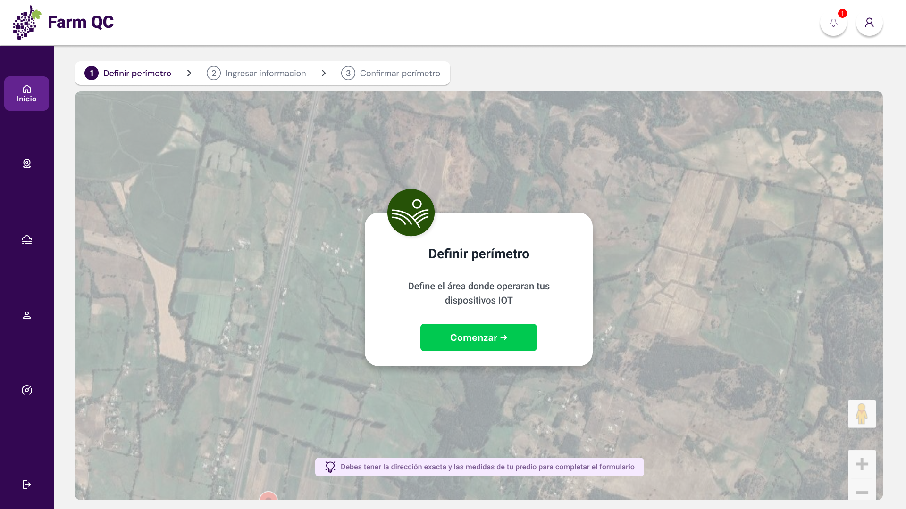
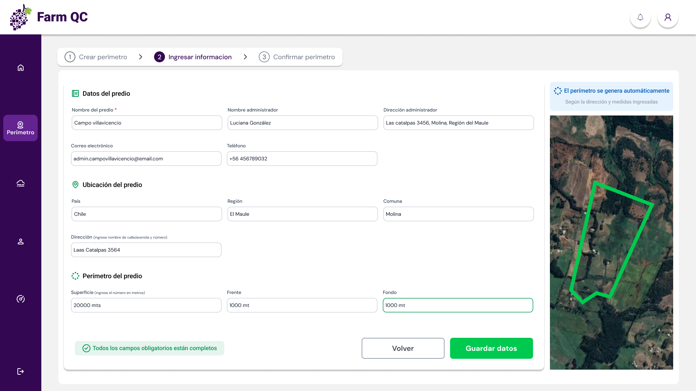
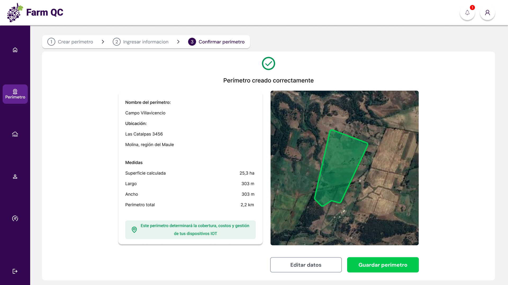

Caso de estudio
Transformé una maqueta técnica sin estructura UX en un sistema operable, reduciendo fricción crítica y habilitando la adopción en usuarios no expertos.
Reducción de contactos a soporte
Flujo principal ahora completado por usuarios
Adopción activa post rediseño
Rol: Product Designer
Duración: ~12 meses
Tipo: SaaS B2B IoT
Farm QC es un SaaS B2B basado en IoT orientado a empresas agrícolas, cuyo modelo de negocio depende de la adopción operativa del sistema por parte de equipos en terreno.
La fricción en el uso inicial impactaba directamente en la retención y en la viabilidad comercial del producto.
Durante su uso en una empresa piloto, cerca del 80% de los usuarios abandonaban el flujo principal antes de completarlo, generando en promedio cinco contactos diarios a soporte. Como resultado, el cliente decidió dejar de utilizar el producto.
El problema no era visual, sino estructural: el sistema exigía toma de decisiones constante en usuarios no expertos, sin guías claras, feedback ni validaciones.
80% de usuarios no completaba la tarea principal.
El cliente piloto abandonó el producto.
El sistema debía ser utilizado por perfiles muy distintos: desde gerencia hasta operarios en terreno, muchos de ellos sin experiencia previa en herramientas digitales complejas.
Esta brecha obligaba a diseñar flujos altamente guiados, donde el sistema redujera la toma de decisiones y acompañara al usuario paso a paso para evitar bloqueos.
Definí el modelo de interacción del producto, transformando una maqueta técnica en una experiencia operable. Trabajé en la estructuración de flujos, jerarquía de información y criterios de interacción para reducir abandono y dependencia de soporte.
El diseño estuvo condicionado por librerías y APIs no modificables, lo que limitaba la personalización de componentes. Esto requirió adaptar las decisiones UX a estructuras existentes, priorizando claridad del flujo por sobre flexibilidad visual.
Realicé pruebas continuas con usuarios no expertos, simulando condiciones reales de uso para detectar bloqueos en tareas clave.
Se observaron patrones recurrentes donde los usuarios no sabían cómo avanzar, dudaban de sus acciones o abandonaban tareas antes de completarlas.
Cada iteración del flujo se ajustó en función de estos bloqueos, priorizando claridad, progresión y reducción de decisiones.
Reemplacé un sistema exploratorio por un modelo guiado, donde el usuario no necesita decidir qué hacer, sino seguir una secuencia clara de acciones.
Diseñé recorridos secuenciales con progresión explícita, reduciendo la carga cognitiva en usuarios con baja alfabetización digital.
Adapté la experiencia a APIs no customizables, utilizando sus limitaciones como base para construir consistencia visual y funcional.
El punto de mayor fricción ocurría en el primer contacto con el sistema. Los usuarios no entendían qué acción tomar ni cómo iniciar el flujo, lo que generaba bloqueo inmediato y abandono.


Para eliminar el abandono, diseñé un flujo guiado donde el sistema acompaña al usuario desde el primer paso hasta la configuración completa, reduciendo la toma de decisiones y asegurando la completitud de la tarea.
La solución se materializó en un sistema de interacción consistente, donde cada flujo, componente y estado responde a la necesidad de guiar al usuario y asegurar la completitud de tareas críticas.
Los procesos fueron estructurados en pasos progresivos que acompañan al usuario y reducen la toma de decisiones.
Cada pantalla presenta una única acción prioritaria, facilitando la continuidad del flujo sin ambigüedad.
Se definieron estados claros de error, éxito y carga para dar feedback inmediato en cada interacción.
Los inputs fueron diseñados para prevenir errores antes de avanzar, evitando bloqueos en etapas posteriores.
Este flujo definía si el usuario lograba utilizar el producto o lo abandonaba. Sin completar esta configuración inicial, el sistema no tenía valor operativo.
Se elimina la ambigüedad inicial forzando una única acción clara. El usuario no necesita interpretar la interfaz, solo seguir la instrucción.

La información se presenta en bloques progresivos, evitando sobrecarga cognitiva y reduciendo errores en usuarios no expertos.

Se entrega feedback inmediato que confirma la acción realizada, eliminando incertidumbre y asegurando que el usuario entienda el resultado del proceso.
El rediseño permitió transformar un flujo que anteriormente generaba abandono en un proceso comprensible y continuo, reduciendo la necesidad de soporte y habilitando la correcta configuración del sistema.
La mejora en usabilidad permitió que el producto pasara de ser inviable en etapa piloto a ser utilizado activamente por empresas en distintos rubros.
Limitaciones técnicas impidieron modificar componentes base.
Se priorizó claridad del flujo sobre flexibilidad del sistema.
Esto implica que usuarios avanzados tienen menor control, pero reduce significativamente el riesgo de abandono en usuarios nuevos.